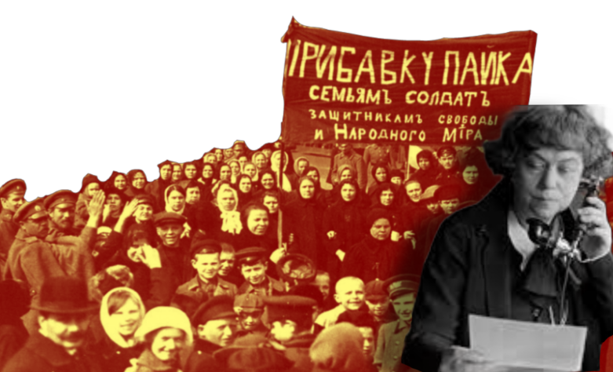
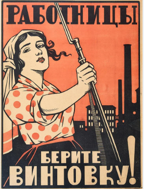

“La donna libera dall’uomo, entrambi liberi dal capitale”. In queste parole di Camilla Ravera si condensa, in modo epigrafico, tutto lo spirito dell’analisi marxista sulla questione femminile. La battaglia per i diritti delle donne e contro l’oppressione di genere rappresenta per i marxisti una priorità e riteniamo fondamentale rileggerla all’interno di una lotta di carattere generale contro il sistema economico capitalista e la società che ne è il prodotto. L’oppressione sistemica delle donne, secondo l’analisi materialista, non deriva da un presunto “destino biologico”, ma emerge da precise dinamiche storiche legate all’evoluzione dei rapporti di produzione, alla nascita della proprietà privata e delle classi sociali. Come Friedrich Engels dimostra ne “L’origine della famiglia, della proprietà privata e dello Stato”, la subordinazione femminile coincide con l’avvento della proprietà privata, che trasforma la famiglia monogamica in uno strumento per garantire la trasmissione ereditaria del capitale.
La liberazione della donna: una prospettiva comunista
Premessa
Con la scrittura di questo articolo non abbiamo l’interesse nel polemizzare inutilmente con i soliti ‘visi noti’ che vediamo nelle riunioni e nelle solite manifestazioni e presidi ritualistici, così come non ha il fine di perpetrare quella mentalità movimentista da ‘circolo chiuso’ e ‘solo per pochi’. Il nostro obiettivo è quello di far circolare le idee fondamentali del marxismo rivoluzionario fra quei larghi strati di studenti e studentesse, lavoratori e lavoratrici, proletari e proletarie in maniera onesta ed aperta. Continueremo con costanza e serietà questo lavoro insieme a coloro che vorranno unirsi. Se ciò avrà successo, vuol dire che saremo riusciti nel nostro intento: forgiare una giovane coscienza e avanguardia della classe.
August Bebel, nel testo “La donna e il socialismo”, sottolinea come il capitalismo sfrutti dualmente le donne: come proletarie sottomesse a salari di miseria nel mercato del lavoro e come garanti gratuite della manutenzione quotidiana della classe operaia attraverso il lavoro domestico. La partecipazione femminile alla produzione industriale, seppur presentata come emancipazione, non elimina lo sfruttamento strutturale, ma lo raddoppia, legandolo a un sistema che mercifica ogni aspetto della vita. Alexandra Kollontai, teorizzando il legame indissolubile tra lotta di classe ed emancipazione femminile, avvertiva lucidamente: “ogni tentativo di raggiungere la parità senza abbattere il capitalismo è un’illusione borghese”. Per quanto operaista e criticabile sulla questione del fantomatico “salario domestico”, debole poiché andrebbe a riprodurre ulteriori logiche di sfruttamento, Silvia Federici, in “Calibano e la strega”, ricostruisce come la caccia alle streghe nel XVII secolo servì a disciplinare i corpi femminili e ad espropriare le donne del loro ruolo nella riproduzione sociale, preparando il terreno per l’accumulazione primitiva. Oggi, le “nuove streghe” sono quelle che resistono alla precarizzazione, alla gig economy e alla mercificazione dei corpi, rifiutando di ridurre il femminismo a una lotta per l’inclusione nel sistema oppressivo. Come comunisti e comuniste sosteniamo la completa e piena libertà di esprimere la propriaidentità ed individualità, ciò non vuol dire correre dietro alla ‘teoria’ accademica del momento: la teoria queer, il transfemminismo e l'intersezionalismo, ne sono degli esempi. Per noi l'emancipazione non consiste nella ricerca disperata di “nuove avanguardie”, “nuove teorie” o rappresenta una questione meramente linguistica o culturale. Non ci riteniamo “femministi/e” o “femministi/e marxisti/e”, ma semplicemente per quel che siamo: comunisti e comuniste, dato che ciò comprende la liberazione della donna come parte integrante della liberazione del proletariato nella sua totalità. Rimarchiamo con decisione il carattere di classe della nostra lotta per un motivo molto semplice: le teorie accademiche sono il riflesso dell’intellighenzia della classe dominante nelle università. Il transfemminismo e l'intersezionalismo, pur denunciando marginalizzazioni specifiche e nascendo da un sentimento onesto di “voler unire le lotte” spesso cadono nella trappola dell’individualismo identitario, frammentando la lotta collettiva in rivendicazioni borghesi atomizzate che eludono il nucleo materialista dell’oppressione. Concentrarsi esclusivamente sul riconoscimento di identità o su riforme legislative, come l’accesso a spazi neutri o la modifica dei registri anagrafici, significa oscurare la radice classista dello sfruttamento, riducendo la questione femminile a una competizione per diritti formali dentro un sistema intrinsecamente violento. La soluzione marxista è inequivocabile: solo attraverso l’abolizione della proprietà privata, la socializzazione del lavoro domestico (scuole, asili, mense, lavanderia pubbliche) la riorganizzazione rivoluzionaria dei rapporti produttivi si può spezzare il dualismo tra sfera pubblica e privata che imprigiona le donne.Le operaie della Comune di Parigi, le rivoluzionarie bolsceviche del 1917 hanno incarnato questa verità, dimostrando che la liberazione di genere non è scindibile dalla lotta per il potere proletario. L’8 marzo le operaie tessili di Pietrogrado aprirono la rivoluzione russa giocando un ruolo fondamentale nell’organizzazione della produzione e dei servizi attraverso i soviet. Furono istituite commissioni speciali per educare le donne ai nuovi diritti e alle nuove possibilità che la rivoluzione aveva aperto: fu il caso dei programmi di riabilitazione lavorativa per le donne sottoproletarie costrette fino a quel momento a prostituirsi. Le conquiste per le donne furono innumerevoli: nuove legislazioni sulla tutela lavorativa, la legislazione sulla maternità del dicembre 1917 che prevedeva un'assicurazione per malattia e l'istituzione di un fondo assicurativo pubblico per le lavoratrici e le mogli degli operai. Fu introdotto il matrimonio civile, riformato il codice del matrimonio sancendo l'uguaglianza tra marito e moglie eliminando la distinzione tra figli legittimi e illegittimi, le pratiche per il divorzio furono enormemente facilitate. Nel 1918 nacque Il Dipartimento per la protezione della maternità e dell'infanzia che prevedeva: aspettative di 16 settimane prima e dopo il parto, esenzione dei lavori pesanti divieto di trasferimento e licenziamento per le donne durante la gravidanza, la proibizione del lavoro notturno per le donne in gravidanza e puerpere, l'istituzione di cliniche della maternità, ambulatori, consultori e asili. Nel 1920 venne legalizzato l'aborto per la prima volta nella storia. Con lo scoppio della guerra civile 1918 divenne ancor più urgente l'organizzazione delle donne negli organismi politici anche nelle zone più remote. Così nel 1919 nacque lo Ženotdel, una sezione specifica del Comitato Centrale. La Kollontaj e Lenin chiarirono che il ruolo di questa struttura era portare le donne dentro il partito bolscevico e coinvolgerle nella vita politica per fare ciò, erano necessarie speciali forme di organizzazione di propaganda date le maggiori difficoltà che esse dovevano affrontare per superare i retaggi materiali e culturali del passato. Il codice della famiglia del 1926 rimarrà il testo più avanzato del mondo, frutto di una discussione di massa nel partito, nei soviet e nella società malgrado una situazione di stallo del processo rivoluzionario, tra cui quello femminile, dovuto sia dall’isolamento della rivoluzione sia dal grave arretramento generale che porteranno successivamente alla controrivoluzione stalinista e con essa l'arretramento nelle conquiste femminili fino a dei criminosi passi indietro. Nelle parole di Trotsky: “L'emancipazione vera e propria della donna è impossibile sul piano della ‘miseria socializzata’”.*¹
Non vogliamo “negoziare” le nostre libertà nei parlamenti borghesi e con le forze ecclesiastiche, siamo disgustati dall'opportunismo di facciata delle forze della classe dominante e falsamente “inclusive”. Esigiamo l'abolizione della famiglia borghese come cellula economica, l’espropriazione dei mezzi di produzione e la costruzione di un ordine sociale in cui la riproduzione sia riconosciuta come pilastro collettivo, non come fardello individuale. Esigiamo la piena autonomia ed autodeterminazione sui corpi delle donne, Lottiamo contro ogni forma di mercificazione del corpo femminile, anche contro la “maternità surrogata” che sfrutta la condizione fortemente precaria delle donne del sottoproletariato, chiediamo l'estensione del diritto all'adozione. Rigettiamo totalmente le logiche e retoriche borghesi sulla maternità e sul calo demografico che hanno come interesse la subordinazione della donna come incubatrice per prole da sfruttare o far massacrare nei conflitti imperialistici: essere madri solo se, come e quando lo vogliamo. Finché il capitale controllerà le nostre vite, ogni conquista “femminista” sarà precaria e limitata, solo la trasformazione socialista della società potrà garantirle. Per noi la liberazione femminile non è una questione meramente identitaria o formale, ma è, e sempre sarà, una questione comunista e di classe.
*¹ Fonte: ”Le conquiste delle donne nella rivoluzione d'Ottobre” di Matilde Porcari, rivoluzione.red